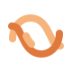
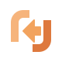
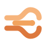
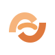

Nuove idee per Tablet Agent
Sei simboli originali, mostrati grandi e nella dimensione dell’interfaccia.

Intreccio
Due percorsi si incontrano e proseguono insieme.Assistente

Varco
Due forme creano un passaggio verso nuove idee.Assistente
Slancio
Due forme in movimento accompagnano una nuova idea.Assistente

Flusso
Tre traiettorie si incontrano e proseguono verso un punto comune.Assistente
Svolta
Un percorso cambia direzione e apre nuove possibilità.Assistente

Ponte
Due forme si tendono una verso l’altra, con un collegamento al centro.Assistente